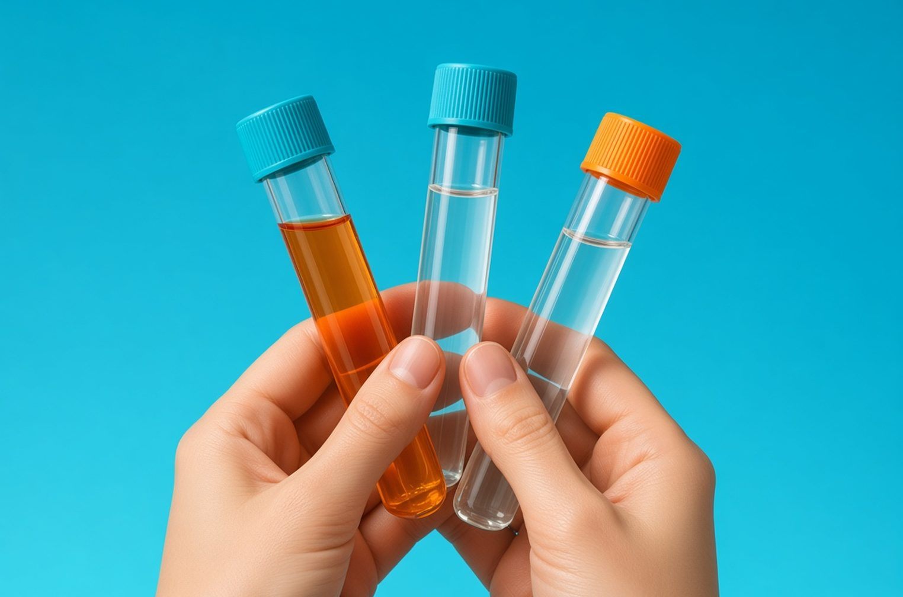
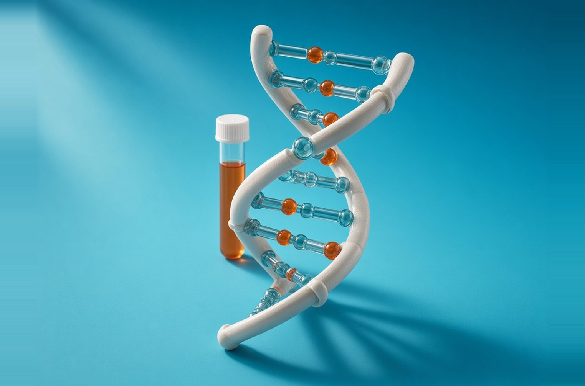
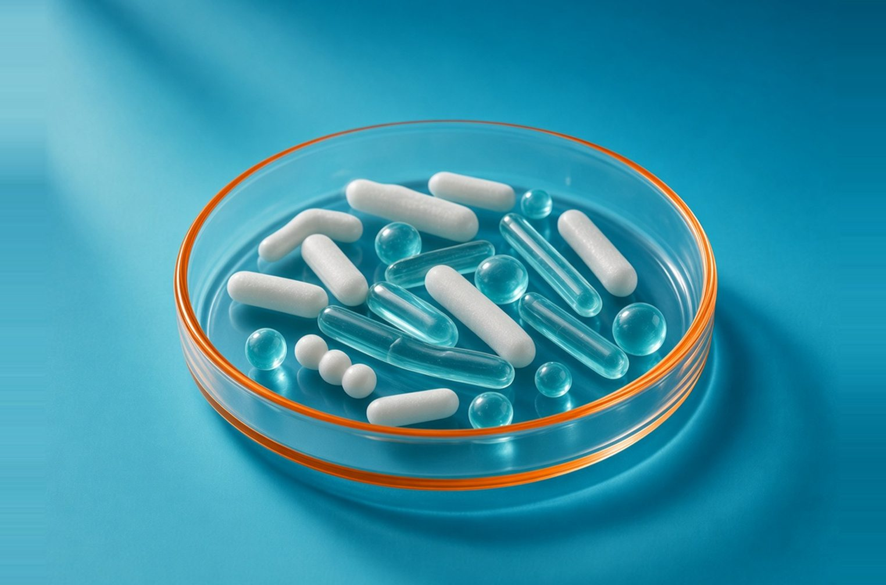
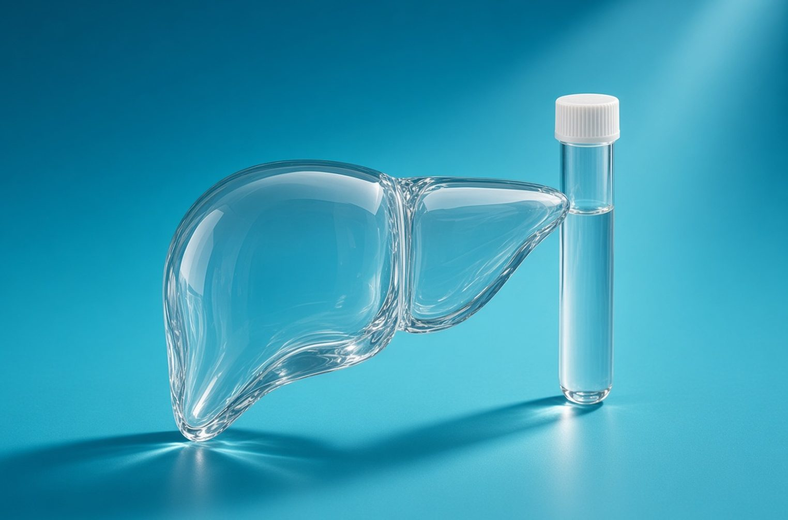
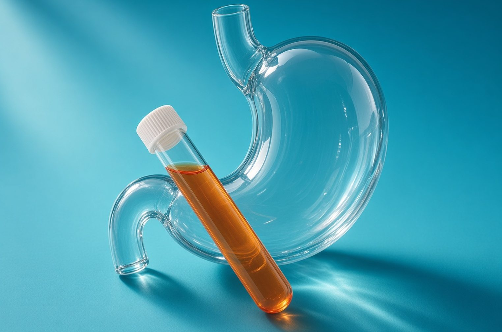
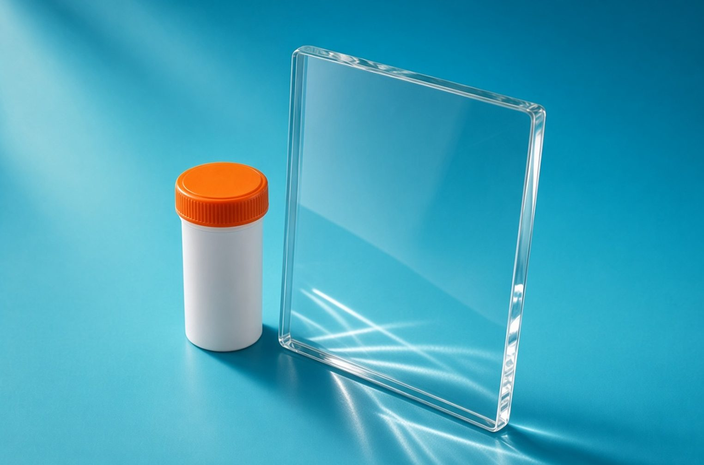

Исследования для разных диагностических задач
Пренатальный скрининг, оценка микрофлоры, аллергодиагностика и исследования желудочно‑кишечного тракта. Особенности тестов и материалы для врачей — в одной подборке.

Пренатальный скрининг, оценка микрофлоры, аллергодиагностика и исследования желудочно‑кишечного тракта. Особенности тестов и материалы для врачей — в одной подборке.


Скрининговое исследование по крови беременной для оценки риска хромосомных нарушений у плода. Расширенная программа включает анеуплоидии всех хромосом и 60 микроделеционных и микродупликационных синдромов. Отдельные показатели зависят от особенностей беременности. Результат оценивает риск, а не устанавливает диагноз. № 6НИПТ.
Комплексное исследование микрофлоры урогенитального тракта у женщин методом ПЦР. Оценивает состав нормальной и условно‑патогенной микрофлоры, выявляет ряд возбудителей инфекций и репродуктивно значимых вирусов. № 3060.

Исследование для широкой оценки сенсибилизации к аллергенам и их белковым компонентам. Результаты помогают врачу разобраться в профиле сенсибилизации и перекрёстных реакциях. Для анализа используется сыворотка крови. № 1881‑К.
120 аллергенов
Аллергены, к которым оценивается сенсибилизация.
180 аллергокомпонентов
Белковые компоненты аллергенов.
Общий IgE
Общий иммуноглобулин E в том же исследовании сыворотки.
Выявленная сенсибилизация сама по себе не является диагнозом аллергии. Результаты исследования оценивает врач с учётом клинической картины.
Вебинар об ALEX2
ФиброТест, № 3ФТ. Неинвазивная оценка фиброза и некровоспалительной активности по расчётным алгоритмам на основе биохимических показателей крови и данных пациента.
НЭШ‑ФиброТест, № 4НФТ. Расширенная оценка, включающая фиброз, стеатоз и стеатогепатит.
Исследование показателей крови, которое даёт информацию о структурном и функциональном состоянии слизистой оболочки желудка.

Без стимуляции, № ГАСТР. Однократное взятие крови натощак.
Со стимуляцией, № ГАСТР978. Взятие крови натощак и повторно после белкового завтрака. Стимуляционная проба помогает уточнить причины сниженного уровня гастрина‑17.
Вебинар о Гастропанели
Исследование на скрытую кровь в кале. Выявляет гемоглобин и гемоглобин‑гаптоглобиновый комплекс. № 842.
Необходимость исследования и интерпретацию результатов определяет лечащий врач.